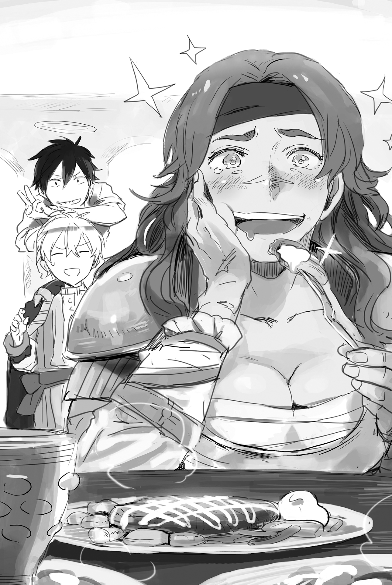
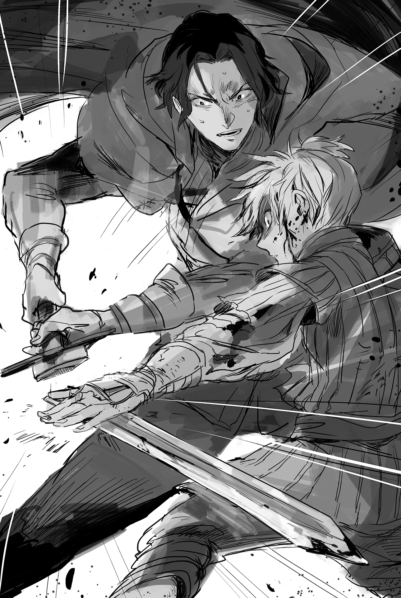

Chapter 2 – Visitor From the East
.
Part 1
「──Displeasing, this is most displeasing.」
The one who spat that out was the leading figure in Haurelia Kingdom’s western region that had territory facing the Cornelius territory, Marquis Selvi Andrei.
Marquis Selvi’s house had been the one dealt the greatest damage in the previous war.
Facing Ignis and Maggot──the two who could only be described as monsters, he was defeated even after preparing a force four times larger than the opposition. Not only did he suffer an enormous loss, he also lost his reputation within the kingdom.
Naturally, he had then devoted himself in preparation to take revenge. He was constantly alert of any movement within the Cornelius territory.
「The idiot , whose only redeeming feature was in waging war, awakened to this governing ability at this late hour. What is the meaning of this?」
Andre questioned Dorun(ドルン), the man who had served as his confidant for many years.
「No, there is no sign of Count Ignis interfering with the development of the Cornelius territory. Everything started when a small company called the Savaran Company suddenly began to build up their strength.」
「Can’t we recruit that company into our territory?」
「We can’t grasp the company’s source of procurement. Most likely, it will be difficult……」
Savaran Company’s current main commodity was sugar.
It was reputed that the sugar didn’t come from refining sugarcane. In fact, it also had a different flavor. The method of this sugar creation was still unknown, even now.
They had discovered that a type of potato cultivated in the Cornelius territory was used as the raw materials for that sugar, but what kind of potato it was and how it was refined was still wrapped in mystery.
In addition, there was also the Gothe Collection, the golden artworks that had recently also even become popular in the Haurelia Kingdom.
Extravagant gold artwork that was thought to be affordable only for great nobles could be obtained with less than ten gold coins. There was no end to people who wished to obtain such things.
Unfortunately, only around ten-odd artworks would be released each month, so there were even some people who would resell the artwork with a price five or ten times higher.
Furthermore, they heard that there was also some kind of seasoning called “mayonnaise” that was developed recently.
If the Cornelius territory continued to develop at this rate, an opponent that already owned a troublesome fighting strength even in its current situation would also obtain a financial foundation.
If that happened, they might be the ones invaded instead.
「It will be difficult to achieve our country’s dearest wish if the Cornelius territory keeps developing like this……that general wannabe is truly annoying!」
.
Cornelius House was originally a family of military men who rose in the world by their achievement on the battlefield.
They produced excellent military men for generations and continued to rise in the world from the rank of baron until they were entrusted with their current Cornelius territory at the rank of count, which had the role of being the cornerstone of the national border.
Not only was the territory located on the shortest route from Marquis Selvi’s territory to the Mauricia Kingdom’s royal capital, there was also a grain-producing region behind it. If the Haurelia Kingdom’s forces managed the break through this territory, there wouldn’t be any serious defensive establishment until the capital. That was the reason behind the Cornelius territory being targeted so many times.
Looking at the situation geopolitically, there was the Morgan(モルガン) mountain range to the north of Haurelia Kingdom and Toledo(トレド) River to the south. They became large obstacles in the way of Haurelia Kingdom expanding its territory.
Therefore, their gaze was naturally directed towards the Cornelius territory.
Conveniently, Cornelius House was financially destitute. The amount of soldiers they could mobilize was also small even among the great noble houses of the Mauricia Kingdom.
In the Haurelia Kingdom’s effort to invade Mauricia, the biggest hurdle at the beginning was how to subdue the Cornelius territory before enemy reinforcements arrived. But if that prerequisite was overturned, it might shake the Haurelia Kingdom’s tactic on the whole.
.
「We can’t be picky at this point. Grasp the trick behind this development no matter what the cost. Depending on the situation, I don’t mind even if you use hard measures.」
「Your will be done.」
Dorun bowed reverently and accepted that order.
The development of the Cornelius territory recently had surpassed their expectations.
There was no doubt that there was an alien element at play here that was never in the reports until now. It would be impossible to form an effective countermeasure without identifying that alien element first.
「……As I thought, there’s no other way except taking a peek at what’s going on behind the scenes.」
Dorun made up his mind that there was no way except carrying out an illegal and forced reconnaissance.
Even if he had to shoulder a political risk because of that, the choice of just watching the development of Cornelius House without doing anything wasn’t available for the Selvi House.
.
Part 2
A strange female mercenary visited Cornelius territory. It happened just several days ago.
She was a robust looking woman with red hair, golden eyes, and a height that surpassed 180 cm. She was so big that it made her seem somewhat scary, but if one looked carefully then they would notice that one could describe her as a beauty.
When asked, she said that she was a war buddy of Maggot, who had become the wife of the count here.
「And so, I want you to give my message to big sis Maggot.」
「Be careful with your mouth. You’re being insolent toward the countess!」
「Big sis won’t care at all about that kind of thing though.」
Unfortunately, Maggot was out to patrol the border. The gate guard was a vassal whose family had served Cornelius House for successive generations, so he was also displeased with Maggot’s affable attitude that he thought as frivolous for a noble.
Although, even if that opinion of his towards Maggot hadn’t been taken into account, it was also a fact that the attitude of this female mercenary had crossed a line as a guest visiting the mansion of a count.
「The mistress will return the day after tomorrow. You can come back to ask again at that time!」
「Aa, I see. Then tell big sis that Zirco of Rondel(ロンデル) came visiting.」
That female mercenary then walked toward the city with the same easygoing attitude that she had when she arrived.
.
「……Perhaps I was also a bit too rash.」
Zirco continued drinking beer in a popular inn called the Fire Colt Pavilion at the castle town.
The beer was lukewarm, but the flavor of wheat that was fermented properly passed down the throat nicely.
「Puhaaa!」
She drank several glasses of beer in one sitting before she wiped her mouth, feeling like she was in a good mood.
The hearty way Zirco drank made the inn’s proprietor call out to her in admiration.
「You look strong, dear guest.」
「I’m not gonna be able to do mercenary work if I got drunk with just this much.」
「Hee……dear guest, you are a mercenary?」
「Right now, I’m just a jobless mercenary without any income though……whoops, no worry, I got quite a lot of savings even though I look like this.」
.
It wasn’t just Zirco, many mercenaries lost work after the war between Haurelia Kingdom and Mauricia Kingdom came to an end.
Even after the war ended, there was still some work participating in skirmishes at the border and taking care of some of the soldiers who turned to banditry. Even so, after nearly ten years passed, there were few remaining battlefields here.
There was Trystovy(トリストヴィー) Dukedom in the southern part of the continent where a civil war was going on. There was also information that in the north, Nordland(ノルトランド) Empire and Gartlake(ガルトレイク) Kingdom’s relationship was worsening. But as someone who was used to the mild climate and the product of the center of the continent, she wasn’t too eager to go to those places unless the pay was really good.
Having said that, she had to work in order to eat. Among her comrades there were also some who were reduced to bandits, but Zirco had no intentions of straying from the correct path.
Then, what should she do……it was then that she thought of asking Maggot, who had been in the same mercenary group as her, to introduce her to some jobs.
Perhaps it was somewhat shameless of her, but Zirco’s instinct was also telling her that something interesting was going to happen in the Cornelius territory.
(If it’s big sis, I thought she would also sense the same thing as me though……)
Although it wasn’t like there was any basis to her instinct. Furthermore, Zirco was also aware enough that this kind of instinct wasn’t a hundred percent accurate.
After all, the animal called human often misunderstood their own desire as a hunch.
(As I thought, it might be better that I don’t meet big sis here……)
The notorious female mercenary who she idolized in the past, the Silver Light Maggot. Zirco didn’t want to imagine her being degraded into a wife of a noble.
Zirco knew that among their mercenary comrades there were those who thought of Maggot’s marriage as a betrayal.
Even now Zirco still vividly remembered Maggot’s godly skill, where people thought that she had really turned into a silver light.
Her spear technique had been polished to the extreme until it reached godspeed.
She was the conqueror of the battlefield who reaped the heads of more than ten people in the blink of an eye.
Yes, she was truly a conqueror at that time.
Zirco didn’t want to see such a great figure buttering up a noble. Those were her honest feelings.
Perhaps the reason she had never gone to meet Maggot during these ten years was also because of such a feeling of avoidance working subconsciously in her mind.
The name of “Silver Light” was being passed down among the mercenaries as a legend.
Her silver hair would look like it turned into a streak of light, and then right at that moment enemies would be falling down. That was the origin of the nickname.
Zilco continued to fight on the battlefield even after Maggot retired, but even so she still didn’t feel like she could win against Maggot in her current state. Maggot was in a domain that couldn’t be imitated by humans.
The silver light that rushed through the battlefield like thunder roaring in broad daylight.
And yet Maggot was more beautiful than any royalty or noble without allowing any men to approach her. Zirco and other female mercenaries idolized her very much.
Most likely, even if Maggot walked the path as an actress instead of being a wife, a lot of regular audiences from all across the continent would flood into the theater for her.
.
「──Before, I introduced myself as Marguerite(マルグリット). But I had discarded that name a long time ago.」
If her memory served her right, Maggot once muttered such a thing while drinking at the camp, when the war was at its climax.
Zirco who was nothing more than a mercenary who idolized Maggot didn’t go as far as asking the reason why Maggot discarded her name, but as someone who also similarly carried a wound hidden inside her heart, she at least understood that Maggot had abandoned her life in the past.
(No good, staying here makes my head completely filled with nothing but big sis.)
And yet she was unable to leave, even though she was thinking that. As expected, it must be because she was attracted towards that person.
The voice of a boy that still sounded a little childish pulled Zirco back from such foolish thoughts into reality at that timing.
.
「Miss, are you a mercenary?」
.
The boy who talked to Zirco looked like he had only just turned ten.
He had magnificent silver hair and clever looking marine blue eyes. He was a handsome boy who would surely grow even more handsome in the future.
However, the instinct that Zirco had cultivated for many years in the battlefield told her that this boy was definitely not as he appeared to be.
「Boy……who in the world are you?」
「Nice to meet you. My name is Baldr Cornelius. I’m also the son of this territory’s lord.」
「You’re lying, right? So you’re big sis’s kid boy!?」
Now that he mentioned it, this boy’s magnificent silver hair was certainly inherited from his mother.
Rather, if this boy was Maggot’s son, then she could completely understand the bizarreness of this boy’s bearing.
The way he distributed his body weight so he could always move carefully in battle. And then his dominating aura that was hiding killing intent in it, something that could only be emitted by someone who was familiar with battle.
It was abnormal for a noble boy to be clad in such aura, but if it was Maggot’s son…….
「I’m surprised……so big sis is still big sis even now huh.」
「Do you know mother?」
「Well, we once fought together on the battlefield for quite a long time.」
However, the more she observed him, the more she realized this boy was really strange.
He wasn’t just well-trained. Zirco also sensed that Baldr had experience killing humans.
Even so, it wasn’t like he was a complete vagabond like Maggot. He was also properly endowed with a noble dignity that was backed by intelligence.
By any chance, this might be the birth of a terrifying thoroughbred specimen.
「Could it be you came here to meet with mother?」
「Yeah, unfortunately big sis is away from home though.」
「Is it alright if I ask what your business is with mother?」
「Boy, a son of a count like you don’t need to talk politely like that with me y’know?」
「Aa, perhaps because I had been trained really hard by various teachers since I was little, the way I speak will naturally become like this when talking to someone older than me.」
Baldr scratched his head awkwardly.
Fundamentally, a lot of martial arts practitioners were fussy about manners, so this had become a habit of his before he realized it.
It wasn’t a praiseworthy habit for the son of a noble. Baldr himself was also aware of that. His mother paid no attention to such a thing though.
「Guess it’s big sis’s blood in you……well, I think you’ve heard but, there isn’t much mercenary work in this country right now. But, my instinct tells me a little that there is something here.」
Zirco didn’t miss it when Baldr’s eyes quietly narrowed after she said that.
His expression looked very similar to Maggot when she appraised her prey.
(Craap! This guy is definitely big sis’s son!)
Zirco was assaulted with the sense that Baldr might cut her down at the next moment, but she stopped her muscles from tensing.
At the same time, she also realized that Baldr was a formidable enemy that she mustn’t let her guard down against if they fought seriously.
His eyes──they were eyes that seemed as though they were looking at another world somewhere, completely disregarding whether he and his opponent would live or die.
She never expected that she would see the kind of eyes that had seen many battlefields at this kind of place.
(This ain’t a joke! This guy is a corpse. A man who can throw away his lives like they were paper waste on the battlefield. The hell big sis, what kind of son have you raised!?)
It felt like she was going to be swallowed by Baldr’s pressure just like this. Zirco desperately put her strength into her guts and pushed back.
「──I see, Zirco-san’s instinct might be accurate. Actually, right now the Cornelius territory is in a tricky situation.」
Zirco didn’t know what part of her words struck a chord inside Baldr, but he started talking indifferently. There was no doubt about it, he was holding something that would start the spark of war in the future.
Zirco felt fear from the bottom of her heart.
She had never felt this level of fear, no matter how strong the enemy she encountered on the battlefield was.
This was the so-called fear toward the unknown. Furthermore, it felt even worse for her, as someone who was familiar with how inhuman Maggot was.
「Actually, I’m walking around searching for mercenaries who can become bodyguards. Zirco-san, won’t you work at my place for a while as a bodyguard to ascertain whether your instinct is correct or not? I also promise that I won’t make it unprofitable for you.」
Just when she was planning to ask Maggot to introduce her to a job, she received an offer from Maggot’s son instead.
It was an offer that she was grateful for, but her pride would be wounded if she just accepted this offer right away.
Zirco grinned boldly and glared back at Baldr.
「I am Zirco the Gale. Don’t think that you can hire me cheaply.」
A mercenary was just a ruffian without their trade called war. And then, there should be something in Baldr’s offer this time that would most likely become a spark of war.
It was an attractive offer that she wanted to accept at all costs, but as expected a mercenary had their own honor. And if war was really going to occur soon, Zirco also had the savings to hold out until that time came.
Zirco didn’t intend to be so softhearted that a mere boy could hire her with his pocket money.
「How about three gold coins per month?」
「You don’t know how capable I am boy……I believe that I’m worth five gold coins at least.」
「Very well, five gold coins then. In exchange, please introduce several people you can trust to me.」
「……Oi oi, are you serious?」
Baldr agreed so easily that Zirco spontaneously asked.
It might be bad to say this, but the unfavorable financial situation of Cornelius was known by all mercenaries who fought here at the time of war.
Also, Zirco was certainly worth five gold coins as a mercenary, but if it was for a short-term bodyguard job then three gold coins was somewhat too expensive. Two and a half gold coins should be the appropriate price.
(Is this boy really alright?)
Sometimes there would be a genius army commander who was completely stupid when it came to economy. The stupidity in that area could drag down their own allies.
Zirco became suspicious that perhaps Baldr was just a green young master who didn’t know about the financial condition of his territory despite being a capable warrior.
「There’s no problem. I can cover that much with my pocket money. Also, please gather around five of your friends, those who are worth three gold coins per person if possible. I don’t mind paying five gold coins if they are really capable but……I want Zirco-san to act as their commander.」
「You, what are you planning to make me do……?」
There was no doubt that this wouldn’t be a normal bodyguard job to protect this boy from bandits and the like.
Zirco was convinced that depending on the situation, a dangerous duty that surpassed mere mercenary work would be pushed on her.
Besides, if she gathered five more mercenaries, the cost would reach 20 gold coins per month. It wasn’t an amount that could be paid for with the pocket money of the heir to a destitute count.
「Recently, the amount of peepers loitering around here is increasing. Not only that, I’m worried that there might be some thugs sent here soon.」
「Is your money coming from that secret?」
「I have too many secrets, so I can’t tell you where the money comes from. But, a sure thing is that it’ll be easier to earn money if the secrets are protected.」
(Aa, this boy is a completely different type from big sis. But he’s undoubtedly a monster too.)
Atypical humans definitely existed.
Even if they looked kind, generous, and affable; on the inside, they were fundamentally different from other humans.
Most likely Baldr could be trusted as a comrade. He might also be trustworthy as a superior, but he was still fundamentally different when compared to an ordinary person like her.
Zirco was able to understand that because she had seen several such atypical people on the battlefield.
At the same time, a hot excitement that she never felt before pierced through her whole body.
(Interesting!)
Most mercenaries were followers of realism. There was no place for ideals or dreams to enter the battlefield, but they were also a type of romanticist that pursued other things than money to fight for.
Even if their life was a worthless one that would someday die a dog’s death, they wanted some kind of reason that was worthy for them to risk their life for.
For the sake of their comrade, for the sake of a superior they respected, for the sake of their birthplace, although there were many reasons, the mercenaries were choosing the battlefield they fought on based on those reasons.
Something that seemed interesting could become a good enough reason.
「I got the feeling, chief, that you’re going to show me something interesting. Hope you’ll really give me one hell of a good time.」
Zirco’s way of speaking hadn’t changed, but the way she called Baldr had changed from “boy” to “chief”. That seemed to be the way Zirco was paying her respect in her own way.
(To think that the day I’ll be hired by Maggot’s son would come──you really don’t know what’ll happen in life, that’s why it’s interesting!)
.
Part 3
「Aah! Baldr-sama!」
「We’ve been waiting!」
Margo and Tyros quickly saw Baldr and others who visited to inspect the sugar beet field and ran toward them.
As always, the way they acted looked like dogs energetically running around their owners.「Who is that big woman over there?」
「She’s a strong soldier who is going to protect this farm from now on.」
「So she’s really strong even though she’s a woman. She’s just like the mistressMaggot!」
Margo stared at Zirco with an honest respect in her eyes.
Zirco seemed to be unfamiliar with this kind of gaze and rubbed her nose awkwardly. She pulled on Baldr’s sleeve.
「Oi, chief! Are you seriously planning to make me guard this kind of kiddy field?」
「Well, you’ll understand the reason in a minute.」
Baldr was staring at Zirco like someone who was having fun toying with a small animal.
Zirco who wasn’t really worldly despite being a battle enthusiast had touched something that must not be touched. The person herself didn’t even notice that, though.
.
「Is the camouflage progressing well?」
「Yes. The outer edge of the farm is already planted with clover. The inner part also has turnip and potato mixed in among the crops. With this, it will be hard to easily judge the crops here.」
「Has there been any interference from outsiders?」
「There isn’t really any for now. It looks like there are some travelers going around asking about the gold artisan or a sugar farm, but this place only looks like a playing ground for kids.」
「Contact me right away if it’s something that you can’t handle.」
Tyros was more reliable than Baldr thought. Now he was acting as the leader of the children.
Sometimes he would even predict what Baldr was thinking. He was an outstanding talent that Baldr would definitely recruit in the future as his close aide.
.
As expected, they couldn’t gather sugar beet in the amount that could cover all the arable plants, so they also planted grass and hardy plants like potato for camouflage and also for giving the soil fertility some rest.
At the same time, Baldr also started bringing in livestock. The goats and cows that were rare in Cornelius territory were gathering overwhelming popularity with the children.
.
On the surface, this farm was a children’s playground and a practice ground for farmwork.
Of course, most of the children’s families were aware that it was nothing more than a cover, but the salary that the children received from Baldr couldn’t be made light of, so most people favorably decided to remain as spectators.
The population in the Cornelius territory wasn’t high even in the castle town, to say nothing of the rural area at the vicinity. Most people there almost never even came into contact with travelers.
In addition, Cornelius was a territory that formed a standing army in a somewhat larger quantity. It was the soldiers’ duty to patrol the city in times of peace when there was no war.
Most of the soldiers came from the local area. They were mostly acquainted with the citizens.
Because of that, the public order in Cornelius territory was extremely good. If there was anyone who caused trouble, then the culprit was usually outsiders. Naturally, the soldiers’ wariness was focused toward the people who they didn’t know.
It went without saying that carrying out espionage in such a situation was extremely difficult.
The Satsuma domain in the end of the Edo era was said to be an extremely difficult place for espionage because of its geographical traits, but this Cornelius territory also didn’t lose there in terms of difficulty.
Furthermore, Baldr and Selina had limited the flow of information and also mixed in false information. Because of that, the mystery of the Cornelius territory, which was starting to attract the attention of not only the big companies in the royal capital, but even foreign countries, was still wrapped in darkness even now.
.
「Baldr-sama, look! Mr. Potato has grown this big!」
「When will we be able to eat it?」
「I’ll give it to you guys when it’s ripe enough for eating along with your wage, so look forward to it.」
「Hoorayyyyy!」
The children danced around in happiness. Baldr looked fondly toward them while guiding Zirco toward a barely sufficient hut that was built on the corner of the farm.
That hut was dreary with only a table and some chairs in it. Zirco sniffed while sitting heavily on a chair.
Her eyes were filled with anger and dissatisfaction. They were telling Baldr that she wouldn’t let him off lightly depending on the situation.
「You seems like you’re in a bad mood.」
「I was filled with expectation, and yet my workplace is just some brats’ playground! Don’t you dare tell me that this place really is just a playground!」
「Of course this place is not as it appears. After all, this farm is producing sugar.」
「What……did you say……?」
Zirco’s mind was in disorder thinking of how to interpret the words that Baldr spoke out so casually.
Sugar was a sweetener that was made from sugar cane in the south. It was a product that couldn’t be produced in Mauricia Kingdom.
From what she saw, there wasn’t any sign of this place cultivating any sugar cane. Then, perhaps it was something else that was acting as the source of sugar here.
「Right now, it’s not just this country but the whole continent that is getting desperate. Many people are trying to investigate the new way to refine sugar. Although most of these people are merchants with sharp noses.」
To repeat, Baldr and Selina were putting in a lot of effort the past half a year in order to keep the information secret.
Besides sugar, they were also shipping out products like mayonnaise and games such as Othello to act as a smoke screen.
However, the only thing that they couldn’t hide was that the focal point was located in this Cornelius territory.
The number of travelers who visited this Cornelius territory that didn’t have any tourist attractions at all had reached double the average year. That fact told one everything they needed to know.
In this kind of situation, merchants could obtain profit with negotiation or intermediation, but there was another force that didn’t have such leeway.
「They cannot reach the heart of the matter even after all their attempts to obtain the information. What will those who don’t wish for Cornelius House to develop do at such a time?」
It would be possible to take countermeasures if the trick was exposed. However, when the true state of affairs is wrapped in darkness, it’s much scarier than a known situation.
That was especially the case for the force that was in opposition against Cornelius House from the beginning.
「Don’t tell me that the Haurelia Kingdom is going to make a move?」
「I believe that the possibility of Selvi House running out of patience soon is high.」
(Good grief……I’m not simply miscalculating here, I’ve really drawn the short straw instead.)
「In other words, you’re telling me to face an irregular force from the Haurelia Kingdom?」
「I think that their force wouldn’t number more than a dozen, but……I believe that the enemy force will come before long without a doubt. Marquis Selvi is someone who will choose to charge instead of retreating when the battlefield is in a stalemate. Zirco-san must know that better than me.」
「Well, we mercenaries called that guy Selvi the Boar because of that.」
.
In the previous war, Marquis Selvi who hated protracted war was famous for proactively sending out his forces.
That was the reason why the damage from the protracted war in the Cornelius territory, which had such high geographic defensive power, was so high.
The Cornelius army was exhausted by the fierce attacks day after day. It almost reached the breaking point, but in the end, what had broken the equilibrium wasn’t the reinforcement of Marquis Selvi but the charge of the Silver Light Maggot.
The marquis’s army was repelled in the worst way possible when their offensive was at the breaking point. They were forced to flee, paying a sacrifice so great that even counting the damage made them feel sick.
It was well known that this retreat became the impetus for the peace movement between the two countries.
「If they still cannot understand even after investigating it, then their only remaining choice is taking it with force. Most likely they will send a force pretending to be bandits to plunder and kidnap──right at this place.」
Zirco felt the clear killing intent emitted from Baldr’s words and realized that her instinct wasn’t mistaken.
「Looks like I got to hurry and call my old friends if it’s like this……by the way chief, you don’t mind if I include you in my calculation of our fighting strength?」
「Obviously not. Even if it’s the king himself, I won’t give any mercy to someone who tries to take my piece of the pie..」
.
However it often happened, when an outstanding character was indifferent toward their own value.
Baldr’s miscalculation here was that Marquis Selvi’s greatest concern wasn’t the secret of the sugar production, but the mastermind behind the series of industrial developments within the Cornelius territory.
If Marquis Selvi learned that it was Baldr alone who carried that out, it would be Baldr’s life that would be in the most danger, without a doubt.
.
Part 4
「DELISHHHHHHHHHHHH!」
On the way back from the farm.
In the greatly popular restaurant One Horn at the castle town, Zirco, who had been eating the standard lunch menu, opened her mouth wide and screamed without any care about how she looked.
「E-err……Zirco-san. Please pay a little bit more attention to your surroundings……」
「What’s with this flavoring!? It looks like it’s using egg but, what in the world is done to it so it can have this kind of taste!?」

「I’m begging you to please calm down!」
Zirco continued to chew while frequently nodding. She looked like an oversized school kid that missed lunch time.
Perhaps Zirco’s true nature was even more childish than he thought.
「It pleases me that you like it that much. Are you a guest of the young master?」
The poster girl of One Horn restaurant Saphir(サフィール) poured water into Zirco’s cup with a splendid business smile.
She was a beauty with sleek black hair and large bright eyes. She boasted a high popularity, regardless of man or woman.
「Yes, she’s Zirco-san, a mercenary who will work here for a while.」
「Take care of me cos’ I’m going to keep coming here from now on」
Zirco swallowed her food in one gulp with reluctance in her expression, and then she took Saphir’s hand with a speed that couldn’t be followed by the eyes.
「It was super tasty! Also, how did you guys make this sauce? Tell me, please!」
Saphir found it a bit hard to maintain her smile when a female mercenary with a height surpassing 180 cm peppered her with questions so vigorously. She could just barely answer.
「I’m sorry. We can’t publicize the recipe because of the contract. In exchange, we’ll prepare you the food every time you come here, so pardon me with that, okay?」
「……I see. That means this isn’t an original recipe of this restaurant huh.」
「What are you saying! The original inventor is your employer, the young master here!」
Zirco’s eyes let out a strange glint *kyupiiiin* and locked on at Baldr.
With an aura like a hunter who had discovered her prey on the battlefield, she gripped Baldr’s hand tightly this time.
「C-c-c-c-chief. It’s fine even if you don’t pay me, in exchange please tell me the recipe ──」
「Wait! Calm down! What are you saying that you don’t need any reward, you mayo lover!」
Baldr couldn’t hide his bewilderment at this unexpected side of the veteran mercenary Zirco.
(This fellow, she’s going to get ruined by food in the future like this……)
「B-b-b-by that, do you mean that you’re going to tell me, chief? Or you won’t tell me?」
Baldr groaned with Zirco holding his shoulders in a viselike grip, her eyes bloodshot.
「Calm down for now! I’ll tell you if you fulfill the requirements……please, calm down!」
「I see! So you will tell me, chief!」
Zirco’s eyes moistened and she clasped her hands together with a deeply emotional look.
「I’ll follow you chief. I’ll follow you forever!」
「……Your character changes too much.」
After that, Zirco roared emotionally again when a new dish using salsa sauce came out after the mayonnaise.
She finally recovered her composure only thirty minutes later, after she ate her fill.
Baldr was really at his wits’ end dealing with her. He just wanted to hold his head in his hands.
.
「So, what are the requirements for you to tell me the recipe, chief?」
「First is to not leak this information to anybody else, no exception. One day someone else will surely succeed in imitating these things, but you mustn’t share this information to anyone at least until these things have spread out to a certain degree.」
「No problem. It’s not like I’m going to do business with them anyway.」
Baldr let out a deep sigh seeing Zirco breathing roughly.
He could just imagine in his mind Zirco making mayonnaise by herself and eating all of her meals with it every day.
Should he explain how much calories mayonnaise contained?
He didn’t want to see Zirco turning rotund while living in Cornelius.
「Come to think of it Zirco, you were in the same unit with Kaa-san weren’t you?」
「I’ve been with her since my first campaign in Rondel up until big sis retired. I was still like a helpless chick at that time.」
Zirco’s eyes squinted in nostalgia and she laughed.
The days that she spent together with Maggot was something to be proud of for her.
The influence that Maggot gave Zirco as the target that she should learn from, starting from the way to survive on the battlefield as well as the manners in battle, couldn’t be described as anything but big.
.
『What’s this, you a newcomer?』
『Yes-! My name is Zirco, from Rondel!』
.
Zirco still remembered as if it were only yesterday. The day, when she was still only fifteen years old, that she was addressed by the already famous Maggot.There were only a few women in the mercenary group, so Zirco and Maggot often talked with each other even after that.
Although Maggot almost never talked about herself.
Baldr was very interested in this chance to learn more about his mother’s past, which he rarely heard about.
「What kind of person Kaa-san was?」
「She was nice, strong, and pretty. She was also quite caring toward the rookies……anyways, she was someone we admire. To be honest, I was shocked when I heard she was going to become a count’s wife.」
There was a rumor that Maggot got her eyes blinded by money and influence. Even though she knew that there was no way that was the case, she hated it just from hearing the rumor.
「Is it just as I thought, that she has been an S since the past?」
「Haa? S!? What do you mean S!?」
Zirco’s face went red and she got flustered by Baldr’s unexpected words.
「No, from how she trained me, I thought that she absolutely has the S fetish though……」
A normal mother wouldn’t toy with her son using the butt of a spear with a joyful grin.
「No no no, big sis was a kind person instead. She often got into quarrels too, but she never fought in a way that tormented the opponent.」
(Kaa-san, it looks like we need to have a serious talk at least once in regards to what you’re thinking about your son.)
Baldr thought for a while before he quietly opened his mouth.
「There’s one more requirement that I thought up just now. I’ll give you the recipe if you can tell me something that can become Kaa-san’s weakness.」
「Oi oi, is that really a question a son would ask!?」
「Children have to surpass their parents one day.」
Baldr looked down and chuckled ‘fufufu’. Zirco renewed her realization 「As I thought, this guy really is big sis’s son」 seeing that.
.
「Weakness……big sis’s weakness huh. No one will have it hard if such a thing exist……hm?」
Zirco suddenly put her right hand on her chin and fell into thought as though she suddenly recalled something.
When it came to martial arts, something that could be called Maggot’s weakness didn’t exist.
If there was any, then it would be only something stupid like her daily life’s propensity.
「……Now that you mention it chief, big sis strangely hated cave crickets.」
「Cave crickets?」
「That’s right. I forgot when, but big sis once screamed like a village girl and went on a rampage. She turned our lodging house into ruins.」
Maggot slaughtered the cave cricket with a very ghastly face. She was unable to ask her just why she hated the cave cricket so much.
「Other than that, that person wasn’t good with bitter things. Well, even if you ask me something like big sis’s weakness, there is only this kind of trifle.」
「Seems……so.」
Even such trivial things was enough information for Baldr.
Zirco missed the wicked smile that Baldr sported at this time. It would become her regret later on.
.
Part 5
「Kaa-sama, this is the day I’m going to land a hit on you!」
「Hou……I wonder since when my son became someone who babbles something that he can’t possibly do? I’ll have to rethink the way I raise you from tomorrow.」
Maggot spoke something disquieting, so Baldr hurriedly made an explanation. He was desperate, because if he were unlucky this would endanger his life.
「N-no no no no! I’m only expressing my resolve just now, so Kaa-sama doesn’t need to be that considerate, I’m begging you! But, there is one thing that I want to ask from Kaa-sama at the dawn of my success in landing a hit on Kaa-sama!」
「Easy task. But that’s only if you can really land a hit on me though-」
.
With those words as the signal, Maggot’s spear approached with a speed that even the eye couldn’t follow.
Speed, angle, step……everything was perfect in this Silver Light’s attack.
Maggot believed that only her husband Ignis could dodge this attack in this Cornelius territory.
However Baldr somehow succeeded in barely dodging it using his instinct that had experienced this attack many times.
「You’ve grown cheeky, haven’t you……」
Maggot stared fondly and swiftly thrust her spear again.
She pulled back her spear so fast that it didn’t leave any openings for Baldr to take advantage of.
Just when he thought that he dodged the spear, the spear had been pulled back into Maggot’s hand. Like this it would be aimed at the moment he moved.
This always happened every time, but Baldr had an objective this time.
(──Dodge it as close to my body as possible!)
He could only do that if he wanted to get closer to Maggot.
Maggot’s spear was gradually grazing Baldr’s body. Red scratches were engraved on his body.
Maggot sensed her son’s resolve and her lips twisted in scorn.
(Looks like he isn’t necessarily joking when he said that he will land a hit……)
When facing an enemy with a long reach, great courage was necessary just for taking a small step forward. It was even more so when dodging the attack at just a hair’s breadth. It would become an extreme mental burden.
How many soldiers in this Cornelius territory could be this daring in the end?
「Then how about this?」
.
Maggot suddenly switched from a thrust into a mowing attack.
The spear bent like a twig with fierce centrifugal force. It was moving sideways with the sound of slicing through wind *buun* to blow away Baldr’s body.
Baldr jumped to dodge it just barely.
「Naïve!」
Baldr had no more ways to dodge attack with him in midair like this.
Maggot intended to chide the shallowness of her son who chose to escape to the air with a sharp rebuke.
However──.
Baldr thrust his hand into his pocket at the same time with his jump. He took out his secret weapon.
Of course it was that cave cricket.
Maggot was dumbfounded. Baldr used his falling momentum to land a slash with all his strength.
「YOU’RE OPENNNNNNNNNNNNNN!」
His wooden sword hit Maggot’s soldier with a definite impact.
He finally managed to land a hit on his overly mighty mother.
.
「UGYAAAAAAAAAAAAAAAAAAAA!!」
.
At the same time, Maggot raised a scream as though it were the end of the world.
「Crush crush crush crush crush……」
「Eh……? Okaa-sama……could it be you’re losing your sanity?」
「Are you──are you also that monster’s comrade?」
「C-c-c-calm down, let’s talk it out. I’m begging you Okaa-sama, return to your senses!」
「CRUSHHHHHHHHHHHH!」
「NOOOOOOOOOO!?」
Baldr was hit by a serious attack from Maggot on the stomach. He was sent flying ten meters, finally crashing on a tree in the gardens and losing consciousness.
That was the instant he swore in his heart that he wouldn’t prank Maggot like this ever again.
.
──Several hours later.
「Do you have any excuse, stupid son?」
「Err~, Okaa-sama, do you remember your words that you will listen to a request of mine if I manage to land a hit?」
「Now that you mention it, I said something like that.」
「I wish to use that request to ask you to treat this matter as though it never happened……」
Baldr scratched his head and made an ingratiating smile with his whole heart praying to somehow escape from Maggot, whose smile looked like a guard dog from hell.
His whole body was drenched with cold sweat.
He had felt his life in danger many times before this, but this time his life was genuinely in danger.
Even Ignis who came rushing when he heard that Baldr was injured scurried back to the mansion in the blink of an eye.
Right now he was shivering in the corner of a room, muttering「He’s really foolish to seriously anger Maggot like that」 from start to end.
(No good, water is spilling from my eyes──)
「But I refuse.」
「NO WAYYYYYYY!」
.
It was said that humans would sometimes erase memories of experiences that were too painful.
The time from that moment until the next morning was lost from Baldr’s memory for eternity.
.
Part 6
Six men and women gathered in the inner parlor of Fire Colt Pavilion.
All of them were wearing simple armor. It could be seen that they were mercenaries or something close, judging from their appearance.
Unexpectedly, all of them were youthful people with nice appearances, so the city girls at that age were sending them interested glances.
「It has been a long time isn’t it? Haven’t you become fatter, Zirco?」
「None of your business. If you say that one more time, I’ll rip your head off.」
The people gathered here were Zirco’s mercenary comrades.
The one who spoke to Zirco just now was even bigger than the tall Zirco. A giant who looked like he would pierce the clouds, his name was Glymur(グリムル).
His hairline had become a bit desolate, but his steely muscled body that was overflowing with vitality displayed that he was still barely in his twenties.
「Ooh, scary, but really be careful okay? I had tried the food too last night, but the food here is really earth-shattering.」
(I’m the one who knows such a thing the best here!)
Zirco hit the table repeatedly in annoyance. Actually, she was really starting to worry about her waistline.
She thought that she had to restrain herself, but the food was so delicious that she would eat too much, against her better judgment.
As a result, her cheeks had become chubbier than when she first arrived here, and her stomach also felt like it had become somewhat flabbier.
If she couldn’t decrease her amount of eating, she had to increase the level of her workout……Zirco resolved herself. A soft voice gave a follow up for Zirco at that time.
「Now now, Zirco looks better with what she looks like right now.」
The one who said that was a female mercenary like her, Miranda(ミランダ).
She specialized in the bow, which was unusual for a mercenary. She took the role of long range support fire.
If asked why it was unusual, it was because it was hard for one’s accomplishment on the battlefield to be recognized by using a bow.
To say nothing of those archers with poor skill. They often caused friendly fire with their allies, so an archer mercenary would be disliked unless they were really skilled.
For Miranda to be relied on by her comrades in such an environment was greatly influenced by her personality and her skill with bow.
.
「Even so, who the hell are you planning to go to war with? You gathered this lineup here……」
The tall swordsman with twin swords and glum look was Jamqa(ジャムカ).
His two-sword style that freely manipulated maneuverable short swords was feared as first-class even among the mercenaries.
In fact, if he managed to leap into her bosom, then even Zirco wasn’t confident that she would be able to win.
.
「Certainly, with the fighting strength here it makes me suspect that you perhaps want to form a bandit group, Zirco.」
The one who said that with a cynical grin was the knife user Cell(セル).
He was the lady-killer among these six. His cold almond eyes and jet black hair were attracting the interest from the females around them since some time ago.
A knife’s range was short for close-quarter combat, but he excelled in his knife-throwing skill. He would display his strength tremendously when fighting in urban warfare or a similar battlefield.
.
「Now now, I’m thankful that thanks to this I won’t need to go to Nordland with its chilling cold.」
This one was an orthodox warrior who used a large shield and a spear. The large scar that ran from his left cheek to his lips gave a striking impression. His name was Mistol(ミストル).
He had wide shouldersand thick limbs, but his height was relatively short in comparison. From afar he would look like a large round lump.
He also originated from Rondel, like Zirco. For Zirco he was a childhood friend who she had gotten along with the longest.
.
「Thank god everyone still hasn’t gone far. After all, there’s no way I’ll be able to call someone who went to another country.」
Zirco had also called several more people other than these five, but they were already departing to a new battlefield, so they couldn’t make it to the meeting this time.
However, even these five who had gathered here were first class mercenaries who Zirco could entrust her back to on the battlefield.
If she was told to do a stalling battle with these five, depending on the situation, she had the confidence that she would be able to hold back around an average-sized company of troops.
「And? Just what are you planning to make us do here?」
Glymur asked Zirco as the five’s representative.
「The task is simple, it’s guarding a certain farm. The reward is three gold coins per person just for dealing with amateurs.」
「That’s cheap! Prepare five gold coins at least.」
「Now, don’t be hasty. There is the saying that your earnings will lessen if you’re in a hurry or something, isn’t there?」
It was true that even though two gold coins was the appropriate price for bodyguard work like this, three gold coins were too cheap considering this lineup’s strength.
However, there was enough reason that justified Zirco gathering this kind of lineup that could be thought of as overkill.
「About this farm you see, it actually hides a funny secret. It’s a place that is gathering attention not only within Mauricia, but also from all the coastal countries like a joke.」
「Oi oi, don’t exaggerate too much even if you’re talking big.」
「Then, what if I tell you……that this farm is producing sugar behind the scene?」
「What kind of joke is that──you’re joking right?」
The jovial Glymur reflexively looked around and lowered his voice.
Of course there were only jovial voices from all the noises inside this bar. There wasn’t anyone who was eavesdropping on their conversation.
「Not at all, this isn’t a joke. That’s why right now a lot of people are searching for information here in a frenzy. And then the most frenzied one is naturally that lord boar, Selvi.」
「You’re saying……that guy will run out of patience and go wild?」
「The client said that possibility is high. It’ll be ten gold coins if we beat up Selvi’s soldiers, and twenty coins if we catch them alive. There’ll also be a separate thirty gold coins for the success reward.」
「Hee, that’s mighty generous. Just who is it? This client-sama you mentioned……」
「This is the kicker. The client is a brat who only turned twelve not long ago. What’s more, he’s the son of Silver Light Maggot. Can you believe it?」
The five’s jaws fell down with no words coming out.
They, who had known Zirco for a long time, knew from just a glance that she wasn’t joking.
.
Part 7
Dorun, who was serving as Selvi House’s chief retainer, was making a grimace.
None of the many spies he sent had brought back useful information.
That wasn’t anything new. That Cornelius territory had always been a difficult place for gathering information.
The only thing he had learned after much difficulty was that there was a glimpse of Ignis’s son in the shadow of Savaran Company.
Even so, Ignis’s son had only turned twelve. No matter what, there was no way he was the mastermind.
Then was it Ignis himself? No, that was also impossible. That muscle brain wasn’t someone who could comprehend economy.
Even then, it was also unthinkable that Savaran Company had achieved their rapid growth by their own strength.
Two and a half years have passed since the company’s leadership changed. There wasn’t any growth during that time. The father was a capable peddler with many personal connections, but in the end he was nothing but a former peddler. This information was already widely known.
There should be someone providing ideas to that company.
After sugar there was seasoning like mayonnaise and salsa sauce, then there was also Gothe Collection that was starting to become the synonym of the Cornelius territory right now. Those were things that were impossible to be thought up by just a single company.
Most likely the ideas of those things originated from someone who wasn’t raised in a normal way, someone who was atypical from birth.
Considering that, the heir of the count wasn’t an existence that could be ignored by any means.
After all, it was rumored that that son had been trained so hard by that Silver Light Maggot to the point of vomiting blood.
The favorable development of the Cornelius territory was fanning up Marquis Selvi’s irritation lately.
As his retainer, Dorun was pressed with the need to produce some kind of results soon.
「Call Torus.」
Dorun ordered a servant to summon a skilled knight.
There was no other method left except using force.
At the very least they couldn’t hope to obtain ground-breaking results by only using the same intelligence gathering method they have been so far.
Fortunately they had pinpointed the farm where Ignis’s son was often seen coming and going from. They could just kidnap someone from there to interrogate.
.
「I have come in response to my lord’s call.」
「Good.」
Torus Reinbard(トーラス・ラインバルド) who showed up was known as a skilled knight even among Selvi House. He was considered as a candidate to be the knight order captain in the future.
He was a youth who was skilled in horse-riding since he was little and also highly loyal. Dorun himself also held great hope for his future.
He was tall with a lean body that contained no useless flesh. Coupled with his handsome face, he brought great agitation into the chests of the women in the castle.
.
「Actually, I have a request for you, sir.」
「Please don’t word it as request, order me to do anything.」
「Umu……even if it’s dirty work that I’m going to ask from you?」
「I have resolved myself for that since Dorun-sama summoned me here.」
Torus spoke as though he had guessed everything. It made Dorun feel anguished whether it would be alright to risk losing this youth in this dangerous duty.
Wouldn’t the time where he was really needed be the coming battle against the Cornelius territory?
However──
「We can’t possibly overlook Cornelius House’s growth more than this. Fortunately, the farm that our spies have pinpointed isn’t that far from the border. Attack that place and snatch away the crops there as well as someone related. Bring back someone who seems to be in a high position if possible to be source of information.」
「I shall accomplish this mission no matter what, even if it’s at the cost of my life.」
「I believe you already understand but, peace is formed between our country and Mauricia Kingdom under the name of his majesty the king. If fighting broke out within Cornelius territory, Marquis Selvi might be treated as a rebel. Because of that, you have to dress as a bandit so that your identity won’t be discovered.」
In his position, Dorun had to give that order even knowing that it would harm Torus’s pride as a knight.
Mauricia Kingdom was historically an enemy country, but in reality the number of nobles who were wishing for war within Haurelia Kingdom right now was few.
The serious wound that was dealt to them from the previous war still hasn’t fully healed.
Selvi House was the one who received the most damage in the war, but there were also a lot of other nobles who bore enormous loss.
There were even some people among them who still harbored unjustified resentment toward the Selvi House that proactively spearheaded the movement for invasion.
It was a fact that if they moved carelessly then the continuation of Selvi House itself would be at risk──they could just ignore Cornelius House if it was like that, but their grudge toward Cornelius House ran too deep for that.
The house head Andrei lost two sons who he put his expectations on in the war.
Taking revenge for that was his dream that he absolutely had to accomplish while he was still alive.
「Even if you and your men are captured, there won’t be any aid from the kingdom. Failure means death.」
「I will bring my platoon with me. Even if I only gather those who are still unmarried, I’ll be able to gather around ten men somehow.」
Torus accepted Dorun’s cold-hearted proclamation as though it was only natural.
There was only death for knights who failed in the battlefield. From the beginning, Torus had no intention to return back shamefully if he failed.
「I’ve asked something unreasonable from you……」
「I shall return the debt of our house to the lord here for keeping us on his payroll until now.」
Besides, Torus wasn’t simply indebted to the marquis house.
Torus himself also lost his big brother and direct superior from the previous war. For him, this too was a revenge that he had to accomplish one day.
Even now after more than ten years had passed, the ill will that had gnawed at the two countries hadn’t been gone, instead rooting deeply into the ground.
If he could speak honestly, he had the desire to fall gloriously in the battlefield.
However, if his capability could become the cornerstone for his homeland’s victory, it was enough for Torus to risk his life even if no one would praise him for it.
.
Part 8
「──Hey, do you really think they’ll come?」
One week had passed since Zirco and her friends started guarding the farm.
Perhaps this job would end without anything happening?
Jamqa asked Baldr with such implication.
「How many times do you think Selvi House has directly appealed to the king of Haurelia Kingdom to start a war in these ten years? They appealed three times even after going through that kind of bitter experience, you know? Do you think they will just wait quietly without doing anything now? Impossible.」
「For me, the way you think is far more impossible, though.」
Jamqa let out an exasperated voice.
Certainly, it was strange for a twelve year old boy to calmly talk about politics in front of a mercenary.
「The security of our Cornelius territory isn’t lax by all means. After all, we have been exposed to the flames of war many times until now. That’s why, there is only one way for them to get close to this place. By sneaking through the forest with few people.」
.
Both Ignis and Maggot had also used a lot of manpower to proactively maintain the public order of Cornelius territory with border reconnaissance up to city patrols, which even they participated in themselves.
The fact that Cornelius army had never received any ambush even once until now spoke more eloquently of their result’s effort than anything.
In other words, it was impossible for a large force of Selvi to pass through Cornelius territory undetected. However, half of Cornelius territory was covered with forests and hills.
Especially the northern part that was connecting to the mountain mass Felbre(フェルブル) with its high elevation. Almost no one would enter there except the hunters. It was the ideal terrain for few people to infiltrate.
Baldr himself was estimating that nine out of ten, the enemy would infiltrate from the north.
.
「……Even so, who can guess that sugar can be extracted from this kind of potato.」
Mistol took a sugar beet that had entered its harvest season and stared at it with an impressed look.
Mistol too had known from before that sugar beet existed.
He heard that it wasn’t suited for consumption and so he held no interest toward it, but if only he noticed its potential, then it was possible he would be rich right now.
「I think that this secret will be exposed one day. Even still, I plan to earn as much money as possible before that happens, and I also have no intention of letting the secret get exposed that easily.」
Sugar beet itself wasn’t a crop that was hard to cultivate. The difficulty level of refining sugar was also not high, at the level that even an ordinary household could do it.
One day someone who imitated them would surely appear and the price of sugar would drop drastically.
Rather, it was the gold plating technology that couldn’t be imitated by anyone that would contribute to Baldr’s profit for the long-term. But Baldr had no intention to sit quietly waiting for that to happen.
「However chief, it’ll be a bit hard to protect the kids while taking on those guys y’know?」
Zirco who was appointed as the leader of the guards made a serious face.
She wouldn’t be this worried if the protection target were important people who were used to being guarded.
Because those people could correctly discern the situation where their life was being protected.
But protecting amateurs who didn’t have such awareness or experience would give the guards a large burden.
「……As expected, I think that capturing children will be the enemy’s last resort. After all, what they need isn’t the human but the information. But if the worst happens, I’ll take them on.」
「That’s the thing that I don’t get. Just how useful you gonna be at that kinda situation?」
「Oi! Jamqa!」
Jamqa folded his arms with a cynical gaze. He was showing his distrust in Baldr’s capability. Zirco tried to stop him in a panic.
Jamqa was still underestimating Baldr as a kid, but Baldr wasn’t a normal twelve year old in every sense.
Baldr moved before Jamqa could say anything further.
Against this kind of man, it would be quicker to teach his body rather than persuading him with words. Baldr was aware of that from Sanai’s experience.
Baldr finished strengthening his body in an instant and turned into a gust of wind that approached Jamqa.
However there was just no way his transparent punch would work against the veteran Jamqa.
Jamqa’s ability in one-on-one combat might be number one or number two among the five. There was a reason why he had a haughty attitude.
But, Jamqa was sweating coldly in his heart at the fact that he had to use body strengthening too in order to block Baldr’s punch.
「Is that all boy?」
Jamqa didn’t show his agitation at the slightest and laughed cynically instead.
「Say that after you look at your armor, Jamqa.」
「What did you say……?」
Jamqa fearfully looked down. There the hard leather that he was wearing under his armor had been lightly stabbed with a skewer that was on the plate before.
The archer Miranda saw it. How Baldr shot the skewer at Jamqa from the fist’s blind spot.
She was able to witness that decisive moment because she was far enough from the two.
「The young master there didn’t use body strengthening for throwing that skewer……you understand don’t you?」
Jamqa shook his head with an astonished feeling from the bottom of his heart.
「Don’t say anything more. Good grief, to be able to use hidden weapons at this age……I’ll never think of you as a brat anymore.」
Obviously.
In which world would there be a noble brat who used hidden weapons when facing mercenaries?
Hidden weapons would only be used in a battle where both sides were trying to kill each other with their life on the line. It wasn’t something that would be used in training or a normal match by all means.
That was because such a weapon would only be limited just to that moment. It wouldn’t be effective anymore after it was seen once.
That was even more the case for a noble. It wasn’t something that nobles should use because they ought to be fair and square.
It made Jamqa feel tired to even think just how many lines between life and death this young boy who could easily handle that kind of weapon had crossed.
.
Suddenly the voices of girls arguing reached the ears of Baldr and others, interrupting their conversation.
「I’m only coming to have Baldr try the trial product that he asked me to make! So ya get outta my way!」
「There’s no need for you yourself expressly coming here for that, isn’t there?」
「I won’t be able to calm down unless I ascertain the guest’s reaction with my own eyes (I want to meet with Baldr quickly! Don’t ya get in my way!)」
「And yet you left everything else to Rorona-san when it comes to other customers don’t you? (I won’t let a vixen like you get even closer than this to young master Baldr!)」
It was Seyruun who was trying to push back Selina, who was trying to advance as she ignored her.
The two were beautiful girls who looked conspicuous even from afar. They two of them looked like they were frolicking with each other when they approached this way while struggling against each other.
「What’s the matter Selina?」
「Aa, ya got a nice timing Baldr! I finished the thing that ya asked the other day!」
「Kuh……a failure! I can’t stop her.」
Selina smiled like a flower when she saw Baldr. In contrast, Seyruun was scowling in frustration.
「Here! Looks really delicious, don’t it?」
Selina said that and took out something to show. It was like a golden sponge with a browned surface that had a sweet smell drifting from it. It was a rectangular baked sweet that stimulated the appetite.
It was the standard sweet for the modern Japanese person that was in Masaharu’s memory.
The way to create it was relatively simple and it also boasted a deeply-rooted popularity among the adults and also the children──it was the reproduction of castella.
Because the skill of beekeeping hadn’t been established in this world, honey was still something precious, but it was possible for anyone to create this as long as a little bit of honey, egg, hard flour, and sugar were available.
It also possessed versatility with how it could have other tastes added into it by kneading tea or cacao into the mix.
Masaharu, who disliked thick fresh cream, loved this simple castella.
Baldr who was also seeing his favorite food, the castella, after so long smiled happily toward Selina.
「It’s baked well. You’re better in cooking than I thought, Selina.」
「Ya shouldn’t underestimate me! Just leave something like this it to me!」
(Yossha! I can show him the appeal of an older girl nicely with this!)
Selina made a reserved guts pose. In contrast Seyruun’s shoulders slumped in dejection seeing that.
(Uuh……it’s a failure……I also want to be taught how to cook but……)
Seyruun who was hired to be a maid in the Cornelius House couldn’t really ask the head chef there to be taught how to cook, because it wasn’t her work domain.
Even if she wasn’t good at cooking, a noble like Baldr could ask his servant to cook for him, so this wasn’t a problem that shouldn’t bother her so much.
However her pride as a woman felt a sense of defeat against Selina.
.
「I-is that a new dish?」
Zirco got between the three while breathing roughly. She was peering at the castella with a fierce glint in her eyes.
Zirco had become the prisoner of various dishes that Baldr experimented with. She couldn’t help but react at this kind of time no matter what.
「It’s called castella, a sweet that I’m planning to sell in the future. Let’s test it first with everyone……」
Baldr cut the castella with the knife on his waist.
Zirco and the others accepted their piece and put it inside their mouth with high expectations. And then they froze completely.
「T, TOO TASTYYYYYYYYYY!」
.
Zirco let out her mysterious yell for who knew how many times with this.
Miranda was also putting her hand on her cheek in astonishment. Her face looked as though her soul had left her body.
As expected the males’ reaction wasn’t as exaggerated as the females, but the elegant sweetness and the soft spongy texture made all of them show an expression of surprise.
「It feels like we’ll only look like idiots if we keep getting surprised every single time by this chief……」
It seemed Jamqa had completely taken off his hat against Baldr and called him “chief” for the first time.
.
Baldr recalled Masaharu’s memory and immersed himself in nostalgia. When he finished enjoying the taste of castella after so long, he turned back toward Selina and thanked her.
「It was delicious. Thank you.」
「Ehehe……I’m also glad that it’s worth the effort of making it.」
「By the way, sorry to say this even though both of you have come this far but──」
Baldr continued with a strict expression that he rarely showed to the two.
「Can I ask you two to not approach this farm for around a week? I think this place will be a bit dangerous.」
「Eeh!? What do you mean by that, young master?」
Seyruun protested as Baldr’s maid who was ordered to constantly stay on his side.
It was a request that she couldn’t accept unless there was an extraordinary reason behind it.
「……There might be a lot of wild dogs that come down from the mountain before long. I’m planning to exterminate them with Zirco and others after this.」
「But young master doesn’t need to go yourself for that……」
「Yeah! Ya can just ask the city guards aren’t ya?」
「I need to bring skilled help with me so that the wild dogs won’t get away.」
The two of them still looked dissatisfied even after Baldr said that, even so they were aware that they were amateurs when it came to matters of battle.
「Please don’t do anything reckless no matter what, okay?」
「After ya finish with that, show yourself in my shop right away.」
Seyruun reacted to that.
「That one is rejected.」
「What the hell!?」
The two of them instantly started quarreling once more. Zirco threw them an amused gaze.
There wasn’t even any need to intentionally say out loud who their target of affection was, even so she should at least say this much.
「You’re really loved huh, chief.」
──In the next instant, a shrill flute sound resounded from the north forest.
.
Part 9
「……This is unpleasant.」
Maggot was near the Midas(ミダス) River that separated Cornelius territory from Marquis Selvi’s territory. Her hand was pressing on her lustrous silver hair that was fluttering due to the wind blowing from the west.
Lately Maggot’s sixth sense was ringing her alarm bells frequently toward Haurelia Kingdom.
That was why she personally rode to the border for scouting several times since last month.
The air that came from the territory of Marquis Selvi was undoubtedly disquieting and there was also sign of them gathering soldiers, and yet there was no killing intent that an army should possess if they would start launching an attack soon.
From the smoke of the soldiers cooking meals near the castle, Maggot estimated that their number was around a hundred, but strangely there wasn’t any change that her eyes could perceive no matter how much time passed.
Perhaps this was a camouflage to pretend they would march here? Or perhaps they were planning to assassinate someone important?
Maggot delayed her plans to return home by a day and continued scouting together with her trusted retainers, but even so there wasn’t any contact from Selvi territory in the end.
「……Looks like my nose has grown dull after leaving the battlefield for a while.」
However, not long in the future, Maggot would look to the sky to lament her declining sixth sense after listening to the course of events that happened outside her expectation.
.
Part 10
The alarm that came from the forest came from Glymur or Cell, who went out scouting.
Baldr was assaulted with the vexation at the attack that happened far earlier than he expected.
(Shit! For the attack to happen when Selina and Seyruun are here of all things!)
「Miranda, Jamqa, Mistol, we’re meeting them on the outskirts! Chief, evacuate the brats quickly!」
Baldr returned to his senses at Zirco’s call.
「Got it. Buy us a little bit of time, I’m counting on you guys.」
「Leave it to us.」
After exchanging words shortly, Zirco blew at a short whistle.
Then from the direction of the forest, *pipipipi-*, similar whistles sounded in short staccato replied back.
That was the code that Zirco and others had decided beforehand.
「Hmph……just twelve huh. They’re underestimating us.」
Half a month since she visited Cornelius, the chance of real battle that finally came changed Zirco’s face into that of a mercenary who was greedily coveting her prey.
.
Actually, there was a reason why Torus and his men arrived this quickly.
It was because Maggot was going out and scouting the front line.
The strongest fighting strength of Cornelius leaving the castle was unparalleled good news for the soldiers who would infiltrate.
Maggot was undeniably the worst god of pestilence for those who lived in the territory of Marquis Selvi.
It could be said that the mental burden on the soldiers would be greatly affected by whether she was present or not.
In order to accomplish their infiltration before Maggot came back, Torus and his men crossed the border until they reached the north forest area without sleeping.
Even so, marching through the forest area was extremely difficult for formal knights like Thorus and his men.
Even for extraordinarily capable knights like Torus, traversing through an unfamiliar sea of trees without getting lost until they reached their destination was a herculean task.
Even though he believed that they had made enough preparation beforehand, the food and water that was decreasing day by day and the stress that was brought on from their decreasing stamina due to sleeping outdoors was heavily weighing down Torus and his men.
「We’re close. Do your best.」
Torus gave a fierce encouragement that was also half persuading himself. He noticed that the forest was gradually opening up with the increase of the sunlight shining down on them.
As he thought, his calculation wasn’t mistaken. The farm that was their objective was nearby.
Should they attack right away, or should they take a break first before beginning their mission, when the time was ripe?
His mind was leaning on resting his body first due to their heavy exhaustion. It was then a grating whistle sound echoed inside the quiet forest.
.
The one who discovered Torus and his men first was Cell, who was on guard in a tree.
Even though they were dressing themselves like bandits, their movement was unique to a Haurelian knight couldn’t vanish completely. Cell, who had fought them many times before, noticed that.
These guys were undoubtedly the advance detachment of Marquis Selvi that Baldr mentioned.
Cell made a faint grin without making any voices at the figures of the Haurelia knights that he had crossed swords with many times before.
(Hihihi! Then I’ll earn a bit of money first.)
It would be ten gold coins if he defeated an enemy, no matter if they were dead or alive. That amount wasn’t bad. Right now Cell’s head was thinking of snatching the delicious prey ahead of his comrades.
And then, he pulled out knives from his waist and aimed at the back of the enemies who were agitated by the sudden whistle sound. And he threw.
.
*Kin!*
.
Two of the three knives that were thrown toward the enemies’ defenseless backs were knocked down by a dry metallic sound.
It was the work of Torus who reflexively pulled out his sword and intercepted the knives.
「Over there!?」
「Tsk! That damn guy is more skilled than I thought!」
Cell jumped from branch to branch and chose to hide for the time being.
The knife user Cell wasn’t good with a group battle on the plains with no place to hide, but an accidental engagement in a forest like this was the area that he excelled in the most.
「──Besides, I’ve gotten ten gold coins for now.」
.
The enemy hid himself, at the same time the knight who was hit on the shoulder by a knife fell on his knees and collapsed.
The knife was coated with a paralyzing poison that worked immediately.
「Dammit!」
Torus spat out a curse before he swung down his sword at the collapsed knight without a shred of hesitation.
They weren’t permitted to become prisoners in this mission.
The ally would definitely finish off those who became unable to fight──that was their oath that they had sworn beforehand.
The man’s throat was cut together with a dull sound of tearing flesh. With a cough, fresh blood spilled out from the knight’s mouth and he expired.
「Let’s go. We can’t retreat after coming this far.」
If possible he wanted them to rest and recover their stamina, and then they would scout first to select their target. However, now that they had been discovered like this, retreating would mean the failure of their mission.
The soldiers nodded wordlessly and followed behind Torus. They dashed toward the farm as though flying.
With their body strengthening, they really became like a gust of wind. The leaves in the forest were all whirled up.
.
「We won’t make it……!」
Baldr was panicking.
The children were already starting to evacuate to the hut the moment the first whistle rang out.
Lately they also used that whistle for the signal of snack time. The children were finishing their evacuation in the ideal time.
However Baldr’s only miscalculation was the presence of Seyruun and Selina here.
The children working on the farm had been trained how to evacuate without themselves being aware of it, but Seyruun and Selina didn’t know what they should do in this time of emergency.
Furthermore, Seyruun didn’t want to part from Baldr. Because of that they lost precious time for the evacuation.
Baldr cursed himself, who was too lax for not giving Seyruun any explanation beforehand.
.
「Miranda! Give us cover fire!」
「Count on me!」
Miranda responded to Zirco’s request and started firing arrows with a speed that couldn’t be followed with eyes.
Her technique was accomplished with body strengthening that was specialized for archery. A human who could fire arrows that possessed both this much speed and power. Even if they searched the entire Mauricia Kingdom, they wouldn’t find five of them.
For Torus and his men who usually wore full body armor as knights, this indirect attack was a troublesome attack that was extremely hard to deal with.
Normally they would deflect the arrows by making it hit a thick part of their armor, but they couldn’t do that right now because they were dressed lightly to pretend as bandits.
Of course Torus and his men had enough training to be able to fight at above average level, but it was just that their opponents were bad this time.
One knight made the wrong judgment in an instant to dodge in a way that he was unfamiliar with. He was heavily injured. Then another one got lightly injured.
It was damage that was too painful for Torus, but Zirco herself wanted to click her tongue seeing that an archer at Miranda’s level could only take down one of the enemies.
(They’re even more skilled than I thought. It’s a blessing that there’s no monster at big sis’s level among them though.)
「Jamqa, Mistol, we’re going to stop them here! Hold your ground until the others in the forest can attack their flanks!」
Zirco tried exaggerating the existence of reinforcement with a loud voice, but Torus and his men didn’t show any agitation.
Far from that, their sight caught Baldr, Seyruun, and Selina. They fixed their aim to them and sped up further.
The village children wouldn’t be useful as an information source no matter how many of them they captured, but Baldr and the two girls looked like they had a high status from their appearance. It was natural that they gathered attention.
Although late, Glymur and Cell arrived from behind and participated in the fighting, but the handicap of six versus ten was greater than Zirco assumed.
If they fought with hit-and-run methods, then she was confident her group would be able to throw the enemy into disarray no matter how tough they were. But their distance with Baldr and the two girls were too close to fight like that.
.
「Uwah!」
One of the knights pitched forward and fell.
It was like he had fallen into a pitfall. His foot was sinking into the ground up until his shin.
Torus judged that it was a pitfall that had been prepared beforehand, but Zirco noticed that it was Baldr’s magic.
「Yosh! We’re pushing them back here!」
Zirco was swinging around her heavy greatsword like it was a twig. She was unleashing an arm strength that was worthy of the name of “The Gale”.
As expected, the knights also stopped advancing against that. They had to focus on defense.
Zirco’s attack had a heaviness that left an impact on their whole body even though they only blocked it for a moment. It showed that Zirco’s strength was the real thing.
In addition, Jamqa’s twin swords were also gleaming under the sun. He was holding back two knights at the same time within his range.
Mistol was cornering one knight with consecutive attacks that were backed with brute force. Cell and Miranda were showering the knights with long range fire that threw the enemies into chaos.
When Glymur who had a superior body size was kicking down a knight and making him unable to fight anymore, it looked like the battle was going to enter a deadlock.
However, Zirco realized that it was just their delusion.
.
「Good luck.」
「Let’s exchange drinks again in that world, my friend.」
Each of the knights pretended to be in a stalemate against Zirco and the others. They held back the six of them so they couldn’t do anything against Torus.
Torus slipped out of the encirclement and became free to act. Zirco couldn’t stop him, who was the strongest among the enemies.
The knights worked together while putting their life on the line. They surpassed the veteran mercenaries.
「Tsk! So this is the aim from the start!?」
Even in the worst case that Torus became the only survivor, it wouldn’t matter as long as he got home with a prisoner and the information with him.
The knights had resolved themselves from a long time ago to die in this foreign land as a mere disposable pawn.
The group of cool headed soldiers who were prepared to die was completely focused on capturing Baldr and the two girls.
「Sorry chief! Try to hold out over there somehow!」
Torus who obtained this much support from his subordinates shouldn’t be an easy enemy by all means. Zirco was aware of that better than anybody else.
However, even so she had no other way besides focusing on the enemy in front of her.
.
Baldr sensed that Torus was a first class knight just from a glance.
Marquis Selvi wanted to learn about the secret of Cornelius territory that he even sent someone this dangerous here. Baldr realized that he had been underestimating Marquis Selvi’s obsession until now.
(I messed up. Everything is my responsibility!)
This man must be a capable person who was a central figure even within the knight order of the Selvi House.
Baldr never even dreamed that the other side would appoint this kind of precious personnel for this dangerous mission, where he would be treated as a simple disposable pawn.
In Baldr’s prediction, he thought that the other side would only send some skilled mercenaries at best.
He was careless in his estimation of the enemy’s fighting strength. Now that carelessness had brought two girls who were irreplaceable to him into danger.
This was truly an unforgivable blunder.
Seyruun would obediently run away if the enemy was really just some wild dogs.
However the genuine panic that Baldr showed made her refuse to evacuate.
If she knew that the enemies wouldn’t be wild dogs but genuine hounds that Marquis Selvi released, she would run straight to Ignis to warn him no matter what Baldr said.
In the end, Baldr’s self-conceit that he would be able to control the situation caused this blunder where Seyruun couldn’t escape, also leaving the mansion uninformed on this emergency.
That was exactly why he had to put his life on the line here in order to protect the two of them.
Baldr silently prepared himself for the worst and drew out his sword.
He also blundered on not carrying a spear in order to avoid standing out.
Torus wasn’t carrying any spear with him. If only he had his spear with him, there was no doubt that the advantage in range would become a reassuring ally for Baldr.
.
「Come with me obediently if you don’t want to die.」
.
「Hih!」
Seyruun and Selina instinctually felt scared toward Torus’s words that resounded heavily in the air. Their bodies shivered.
Torus didn’t attack Seyruun and Selina right away because his instinct was perceiving Baldr as a strong enemy.
His rational mind insisted to him that Baldr was just a single boy, but Torus knew that on the battlefield, there were situations where you had to prioritize your instinct first rather than logic.

Furthermore, such instincts would occasionally be correct.
Besides, the young boy whose face could be mistaken as a girl’s was emitting a killing intent that was rivaling a skilled mercenary. He was at least sure of that.
Torus closed the distance without the slightest carelessness. It made Baldr want to click his tongue.
It was because Baldr was hoping that Torus would let his guard down seeing that he was a kid.
It was said that a lion would give its all even when just hunting a rabbit. Torus too was a man who wouldn’t spare any effort if it was for the sake of his mission.
.
「──You won’t lay your hand on them, even if it costs me my life.」
.
That sentence that Baldr inadvertently said made Torus realize that the boy before him wouldn’t give up no matter what, until he died.
This was surprising.
Few humans could resolve to die even while fearing death.
Torus himself could only find ten people who could do such a thing as a result of his personnel selection for this infiltration squad. That number was lower than he expected.
He could only barely gather the required number after receiving three more people who were Dorun’s subordinates as reinforcements.
This boy who was only around ten years old could make the same resolve like those subordinates, who were his pride. Torus couldn’t help but feel a fresh surprise.
At the same time, Torus also knew better than anyone that a soldier with this kind of resolve would turn into an unyielding warrior who would never give up by any means, no matter how despairing the situation was.
.
「Then I only need to defeat you and take them away!」
.
Even if his opponent was just a kid, Torus recognized him as a formidable enemy that had to be defeated. He accelerated right away and closed the distance to Baldr.
Baldr threw a stone with a quick movement that couldn’t be followed by eyes as though he had seen through Torus’s movement.
The stone throw could easily kill if the opponent was only at the level of a bandit, but for a warrior at Torus’s level, this attack was too upfront.
However, when Torus was about to dodge the stone calmly, the stone that was as big as a child’s fist broke apart into small pieces right in front of his eyes.
「Break!」
「Unuh!?」
The stone that was transformed into sand particles entered Torus’s eyes, blocking his sight.
Against proper magic, Torus would be able to neutralize it instantly, but as expected he couldn’t dispel the magic when it was targeted toward an inorganic object in front of his eyes rather than toward himself.
(This child……as I thought, he has to be killed.)
Torus gave up recovering his eyesight and closed his eyes while straining up his nerves.
Torus didn’t know that Baldr was the heir of Cornelius House.
He thought that it would be useful if he captured this boy, but Torus instinctually decided that it would be too dangerous to fight him while holding back.
Baldr made use of his small body and crouched low on the ground while aiming at Torus’s shin.
Torus had to make it back to Marquis Selvi’s territory. It would be fatal for him even if he only got his leg injured.
Torus sensed Baldr’s presence without relying on his sight. He could perceive Baldr’s sharp sword tip like the back of his own hand.
Indeed, it was a splendid attack. He wouldn’t make it in time to block it with his sword.
But, in the end it was still just an attack of a boy.
Torus dodged Baldr’s sword without any panic at all. He then attempted to step on the sword from above with his foot to neutralize the opponent instead.
The slash that should be unleashed with the best timing wasn’t only easily, his sword would immediately get held in place. Baldr let go of his sword without even an instant of hesitation.
Seeing how he easily let go of his only weapon, it could be seen that Baldr’s instinct was far removed from the average standard, just as Torus expected.
Even a warrior at Torus’s level was unintentionally taken aback by Baldr’s action.
Considering the boy’s fighting skill, losing his sword was the same as telling him ‘please kill me’.
The foot that he swung down with the force to knockthe sword from Baldr’s hand couldn’t be stopped anymore.
The instant Torus’s foot struck the ground, Baldr took out a knife from his pocket that he stabbed deeply into the back of Torus’s foot.
.
There was the saying of letting your flesh be cut to sever the enemy’s bone.
Torus understood to a painful degree that his body mustn’t be seriously injured for the sake of the mission, but when he judged that he couldn’t dodge this attack, he accepted it as a necessary sacrifice with a readiness that was befitting a warrior.
And then conversely, the boy sacrificed his sword in order to inflict a wound that wasn’t fatal on him.
Most likely this boy had never been in a battle against someone stronger than him where they were seriously trying to take each other’s life.
And then his talent as a commander was essentially better than his talent as an individual fighter.
If the boy sought what to be ultimately a victory for his ally as a commander, then it was a right decision for the boy to wound him here.
But right now the boy was a warrior before he was a commander, and his opponent was Torus──
.
Torus’s mind was running like that within an instant, where everything looked like it was running in slow motion.
And then he prayed for the safe passing of the enemy he respected to the next world while his sword smoothly struck toward Baldr’s neck without any mercy.
.
*Gaki-!!*
.
Baldr reflexively raised his right hand only due to the instinct that he cultivated through his training with Maggot. That was the only way he could explain it.
His right hand had let go of his sword while his left hand was holding the knife that was stabbed into Torus’s foot.
Because of that he made it in time to block the sword using his right hand that was wearing a protector on the back of his hand. If he used his left hand, then Baldr’s head would already be flying together with his arm.
However, the body weight and physical strength between the two of them was too different. Baldr’s right arm was snapped along with his defense. His small body was sent flying more than ten meters.
His body bounced on the ground three times, engraving countless lacerations on his jade-like skin.
As for his broken arm, there were white bones jutting out on the opposite side of his hand protector.
Baldr was barely alive, but it was obvious to anyone’s eyes that he didn’t have any strength remaining to stand up again.
Even so Torus couldn’t help but feel admiration.
(Was it his true strength that enabled him to defend in that instant? Or was it the will of heaven? Either way this boy is a terrifying fighter.)
.
「Young master Baldr!」
「Baldr!?」
Selina and Seyruun let out a shrill scream and tried to run toward Baldr, but Torus wordlessly held them in his left arm.
The weight of Seyruun and Selina’s slender bodies was light enough for Torus to carry them in one hand.
「NOOOO! LET GO! YOUNG MASTER BALDR!」
「LET GO! LET GO I SAY! YA DAMN OAF!」
The two desperately mustered their strength to struggle, but that resistance was completely in vain against the overwhelming strength of a veteran knight.
.
「Tsk-!」
Zirco had witnessed Torus defeating Baldr when she glanced over there. She clicked her tongue loudly.
Zirco and the others’ fight was progressing nicely. They had been injuring their opponents, but they still hadn’t managed to reduce their number.
If Torus joined the fight here, it was clear they would be the one cornered into disadvantage.
(He is still far away from big sis’s level, but there’s no doubt that guy Torus is also in the monster category……)
From Baldr’s battle, Zirco had sensed that Torus possessed the highest battle strength among anyone here.
In this world, there were monsters who were living in a domain that even humans who were called first class couldn’t reach no matter how hard they worked.
The action that a mercenary would take when they encountered such a monster in the battlefield was only one.
When their ally looked like they would win, they would do their best as long as it didn’t endanger their lives. But they would run away if it was a losing battle.
(Chief, you’re really a good commander, but you’ve no luck.)
Zirco’s mind was about to decide to abandon the battle and escape.
It was too bad she wouldn’t get the success reward, but with their employer in that state, it wasn’t likely that they would get paid.
Her emotion wanted to save Baldr, but her instinct as mercenary was demanding her to escape from a battle that had no prospect of victory.
.
「Please, help! Young master! Young masterrrr!」
「Baldr! This is a lie right? Stand, stand up!」
(Their screams sound far away.)
Baldr’s awareness was turning faint as though he was slowly getting pulled into a bottomless bog. Baldr was thinking such a thing within his fading consciousness.
The fact that he was still conscious even after receiving such a strong impact and didn’t faint was already a miracle.
He couldn’t feel anything from his left elbow down. It was like his arm had been cut off from the root.
The inside of his mouth was filled with the rusty taste of blood. He wanted to spit it out right away. However, he couldn’t even do that in his current state.
(Sey-nee, Selina……don’t cry like that)
『Because I’ll protect you two.』
He wanted to say that to the two girls who were more important to him than anyone while listening to their unceasing wails, but he noticed that he had no way to do that.
There was no feeling in his arm even if he tried to swing a sword.
He couldn’t put any strength into his legs even though he tried to stand.
Perhaps because his head was hit, his semicircular canals were shaken and he felt a hallucination like the earth and sky had been reversed.
How was he going to protect those two from such a terrifying enemy?
Losing Seyruun?
Losing Selina?
The two who had continued to watch over Baldr since he was little were going to be kidnapped right at this moment. And it was because of the blunder of none other than himself.
What are you doing sleeping here?
Can’t you hear those two’s voices?
Baldr, what are you doing over there?
.
I want……I want strength.
I want strength right now.
I don’t care even if I have to offer this life of mine for that.
How can I just sleep leisurely like this while my important girls are going to get taken away.
.
Damn straight, how can ye not fight when there is such an amazing samurai before ye.
The war that I desired from the bottom of my soul is in front of me right now.
What’s more it’s a losing battle.
Right now is the time for yer heart to tremble as a warrior──.
.
The ferocious impulse sleeping inside Baldr swelled up and before he knew it his thoughts were swallowed into that torrent.
And then, the man who was known as a daring warrior, who survived till old age even though he had gone through many losing battles in his whole life, was opening his eyes after a very long silence. It was as though he was sniffing the thick smell of battle.
『This brat who don’t even know the etiquette of the battlefield, pushing this kinda troublesome thing to this old geezer.』
His tone was scathing, but Baldr’s mouth that was faintly grinning was eloquently indicating the joy that man was feeling.
Baldr’s heavily injured body stood up like a revenant.
Even though anyone who saw him would definitely say that he wasn’t in a state for fighting, he spat out the blood that was pooling inside his mouth to the ground with his broken right arm dangling limply.
『A nice wind.』
The old warrior filled his lungs with the air of battle after so long and laughed in satisfaction.
『──How about ye return my women over there, eh?』
.
Oka Sanai died inside Inawashiro Castle that day together with the coming of the dawn. He thought that his life was already concluded with that.
A dead human who kept throwing his weight around no matter how much time passed would be nothing but a nuisance to the living.
Not to mention Sanai’s existence right now was nothing but a memory. The only one who had to live in the present was the boy, Baldr Cornelius alone.
With that as the case, he believed that it was only logical for him to return to his sleep once more.
Ultimately, his memory was from a world that was different from this world, and Oka Masaharu, the memory of the other person, was his own descendant. The two of them in the end were alien elements for Baldr’s life. Understanding that, Sanai went to sleep deep inside Baldr’s consciousness.
He was determined to keep sleeping forever, until Baldr’s life came to an end.
However the person called Sanai loved battle more than anything else. He was a warrior through and through.
Even when his age had gone past seventy and he spent all day lying on his bed, he was a trueborn general who still tried to fight in Osaka’s campaign. There was no way he wouldn’t react to this thick scent of battle.
Sanai loved money. He left behind his name through accumulating a great amount of money, but that money for him was funds for war. The principle that was governing his conduct was purely oriented toward war.
No matter how powerful the samurai that he faced, he had the self-confidence that his martial art wouldn’t be outdone no matter what on the battlefield. His overwhelming pride from cutting open his path in life with his spear didn’t allow Baldr’s life to end like this.
『To be able to stand on the battlefield once more like this……this old man is really no match against the gods.』
He didn’t know what kind of mischief destiny was toying him with, but he decided that he would rejoice for being able to encounter a battle like this once more.
Sanai unconsciously bared his canines with a fiendish grin.
That was the face of a predator in a hunt for his prey on the battlefield.
.
「……You’re still standing even after that?」
Even though it was already shocking that the boy was still alive after getting hit by Torus’s full strength, Baldr went even further and stood up once more with the intention to fight. Torus couldn’t help but feel an emotion that was like fear.
.
「Young master! Please escape! Don’t mind us!」
「Baldr, don’t force yerself!」
.
Seyruun and Selina screamed seeing Baldr’s injured state.
Baldr’s state couldn’t be said as alright by any standard.
His right arm bone was broken and jutting out of the skin. His forehead was cut when he was sent flying and Baldr’s beautiful silver hair was dyed with blood. Blood was trickling down to his chin.
It was strange that he could still stand in such a state.
.
But, Sanai was laughing joyfully.
『Battle is really great, isn’t it, youngster.』
The last time he stood on a battlefield was when he fought Date Masamune at Fukushima.
Sanai still remembered even now how it felt when he crossed spears with that extraordinary eccentric.
The sensation of his spear handle firmly landing on Masamune’s helmet, the sensation of Sanai’s battle surcoat tearing apart on the back when they passed each other.
It was his life’s regret for not being able to take down Masamune there, but Sanai was thoroughly aware from his experience that war was something that wouldn’t go following your expectation.
Sanai inhaled the air that was filled with killing intent that penetrated into his whole body. Right now he was enjoying the atmosphere of the battlefield after so very long.
To be on the losing side while facing a powerful foe by relying on his own skill.
This was truly the cherished desire of any warrior.
.
『Come.』
Sanai said that and leisurely gestured with his hand toward Torus.
It was an unbelievable attitude coming from someone who was on the verge of death’s door just now.
He acted as though he was the stronger one here who would kindly give him a pointer about fighting.
.
Torus’s rational mind was telling him that this boy didn’t have any more strength remaining. However his instinct was ringing alarm bells loudly.
He couldn’t imagine that boy would be able to defeat him at this point with only a knife, but perhaps he still had some kind of way to deal one last blow before he died.
The boy provoking him with that hand gesture must be because he had exhausted his stamina to the point that it was difficult to even step forward.
He had the choice to ignore this boy and return home without doing anything. But in front of this provocation that the boy was staking his life into, Torus’s pride as a knight didn’t allow him to leave without giving anything back.
「……Tell me your name.」
『Oka Sanai Sadatoshi.』
「Oka, huh. That name is different from the name these girls are saying but……I’ll remember it.」
And then Torus casually rendered Seyruun and Selina unconscious.
In a glance it looked like he was only caressing their necks gently, but the two had their carotid artery pressured for an instant and fainted without comprehending what had just happened.
Torus slowly put down Seyruun and Selina, then he faced Sanai once more.
This boy wasn’t that lenient of an opponent that he could face him while still carrying the two.
Sanai too never considered taking advantage of the opening when Torus carefully put down the girls.
「Here I come.」
Torus started running while drawing his sword.
Perhaps the boy would use another magic like with the stone throw before, but in the end it would be nothing more than child’s play.
Seeing it another way, the boy using such a trick was like saying that he recognized he wasn’t his match in a head-on confrontation.
Torus’s skill wasn’t so shallow that he would be defeated by such a cheap trick.
In contrast, Sanai only stood still without any movement.
If they only compared their body strengthening, then Torus was superior to a ludicrous degree.
Sanai’s only hope of winning this by the skin of his teeth was only by making use of his overwhelming amount of battlefield experience and his fighting skill cultivated there.
That was why Sanai had to keep enduring against Torus’s attacks until that timing for victory arrives.
.
*Kin!*
.
The sword’s blade slid down the knife’s blade with a dry sound. Sanai parried Torus’s slash only barely.
And then the sword swung horizontally toward Sanai’s torso in a flash. This time he dodged by rotating behind.
Those were splendid attacks that didn’t hold back at all, even against a seriously injured opponent.
Even though Torus could simply run away while ignoring Sanai, he rushed forward like this instead to choke the life out of him. Sanai was feeling a great joy from Torus’s manly decision.
This was truly a samurai who was worthy for him to stake his life against.
(He is like a completely different person than before……)
Sanai was suddenly showing a polished movement. Torus couldn’t help but feel bewildered by this sudden increase of skill.
Certainly there were times when a warrior instantly grew just from one battle, but he had never heard about something like this when the person’s fighting style changed completely.
Baldr before this was like the archetype of someone talented that fell into the trap of thinking too much.
He was thinking too much with his head, how to hold out until his allies came to help, how to injure the opponent to obstruct him from running away, how to rescue the hostage, etcetera. Because of that, his body’s reaction speed decreased.
It was a bad habit that was often found in a talented but inexperienced youth.
But then what about the boy right now?
He was calmly running his brain while smoothly handling his knife with logical movements that went through the shortest route every time.
The proof was how he was enduring Torus’s fierce attacks completely even with the handicap of his right arm being useless.
If he were grasping a sword while he was in a perfect condition, it was unknown how this match would end up.
(──But, I’ll win without a doubt in this current situation.)
No matter how excellent the defensive battle that the boy displayed was, it didn’t change the fact that the boy’s situation was gradually worsening.
The weapon’s reach, physical strength, stamina──Torus were greatly superior in all those aspects. It was obvious that this exchange would eventually conclude with a fatal wound to Sanai.
And yet, Sanai was making a face that looked like a kid who got a toy for the first time.
『What a good feeling……』
Sanai was feeling how the cage of his heart was opening up in this desperate battle, where even a single wrong decision would lead to an instant death.
He thought that he had no more regrets when he died after disposing of all of his wealth and exposing the ugliness of old age, when he couldn’t even get up from his bed anymore.
There was no place for an old soldier to belong in an era that was welcoming peace.
The survivor of the Warring States era, a warrior who lost his place to die on the battlefield was fated to vanish from the now peaceful street corner, just like a stray dog that was chased off the street.
Even the general who staked his whole life for battle lost the battlefield that was his place to belong. He became nothing more than an ornament with a vanity that was just for show.
Indeed, peace was certainly precious. From the perspective of the citizens who were able to escape from the fear of the soldiers’ pillaging, there was nothing better than having no war.
However, Sanai was unable to forget it, the clash of a human’s true nature that could only be comprehended in an extreme situation, the exultation of the heart when competing in martial arts, their whole soul put into it for the sake of victory.
A warrior would become like the dead before standing on the battlefield that they decided, but it didn’t mean that they had abandoned their will to live by any means. A warrior’s long-cherished desire was to throw away their fear of death and sublimate their own life on the battlefield.
The will to “live” and the resolve to “die” that couldn’t be experienced at all in a peaceful world. Sanai──any warrior was standing on the battlefield in order to experience that nirvana.
Betting on death that would only happen once in the life of an instant, that pride was also the warrior etiquette.
That’s right. Those who lived in peace wouldn’t understand.
To fight, to live, to die, are really fun.
『Ye really make me have fun, youngster.』
.
Blades clashed.
Exchanges of offense and defense that were mixed with advanced feints were unfolding there. The average soldiers wouldn’t be able to even imagine anything like this.
When Torus noticed, he realized that he was smiling.
He wondered when was the last time he was feeling this kind of exaltation, this sense of fulfillment that was hard to be compared with anything else.
Was it when he was appointed to be a knight at the start? Or perhaps when he first defeated an enemy on the battlefield?
「This is my first time feeling that a battle can be this fun──it even makes me feel reluctant to win and end this.」
The boy was also smiling in joy from the bottom of his heart this entire time, ever since they first crossed blades.
Most likely he was feeling the same as him.
The tension of being in a struggle to the death against a formidable opponent that he could throw his whole body and soul against without holding back anything was hopelessly fun.
It even made him think that it would be nice if they could continue fighting just like this for eternity.
.
But, the demise would definitely arrive in the end no matter how fun the time was.
Sanai began to use even the protector on his broken right hand in order to block Torus’s sword.
He couldn’t handle all the attacks with just a knife due to the distance between the two shortening
However, the broken right hand that couldn’t feel a thing was pushed back by Torus’s physical strength for just an instant.
At this rate, he would be split in two along with his arm.
Sanai tilted his balance forward to force this back.
But with such a posture, although he would be able to move to the left or right immediately, it would slow his reaction to the front or back.
「It’s the end with this.」
Torus’s horizontal slash attacked Sanai.
He wouldn’t make it in time even if he crouched down or jumped up.
Torus could imagine Sanai’s small body bisected in two with this slash.

──However, this was a result that Sanai lured him into. A horizontal slash with the blade’s side exposed fully was none other than the moment that Sanai had been waiting for until now.
『 Namiuchi 』
For a general of the Warring States period, destroying the opponent’s weapon was also one of the necessary martial art techniques.
No matter how fast and powerful someone could become using body strengthening magic, their strengthening wouldn’t reach until their sword.
Sanai threw away his knife, then his magically strengthened palm struck down at an angle that was nearly ninety degree on the blade’s flat side, which was structurally the weakest part of the sword.
*Pakiri* A dry sound rang out. The thick and solid knight sword was broken from its base too easily.
「What–!?」
He could still understand if this was caused by sword clashing against sword, but Torus never even dreamed that something like this would happen from a mere palm strike. He was hesitating for an instant seeing his sword that had lost its utility as a weapon.
Most of his training as a knight was spent learning how to use spear, sword, and armor. It wasn’t like he was completely useless in unarmed fighting, but it was still outside his area of expertise.
Torus reflexively questioned himself on whether he would be able to win against the boy without the advantage of a sword.
.
『How green.』
.
Sanai regretted Torus’s momentary hesitation.
For a warrior, one should constantly prepare a method of fighting without a weapon. If they had none, then they had to choose the option of running away without any hesitation.
Sanai grabbed the tip of the broken sword with his bare hand and stabbed it into Torus’s throat with all his strength, without any care for the blood that spurted out from his fingers.
When he saw Sanai throw away his knife, Torus became focused on unarmed fighting. His reaction was slowed by the action of stealing the enemy’s broken sword, which was outside common sense.
A veteran warrior wouldn’t be so lenient that they would overlook such a fatal opening.
The instant Sanai’s left arm reached the end of its swinging movement, blood spurted out like fountain water from the severed carotid artery in Torus’s neck.
(I see, so from the start……he was waiting for the chance to break my weapon and for me to be shaken from that……)
He was too careless from trusting his advantage in weaponry.
To think that his opponent was planning to make use of his weapon──what a wonderful idea.
「Ma……magnificent, boy.」
『Tis’ a good battle. As I thought, war is really great……youngster.』
There was no way Torus could understand Sanai’s words, but he certainly understood Sanai’s meaning and smiled joyfully.
He was certainly regretful for failing his mission and dying in a foreign land, but this enemy was certainly more than enough for him to fight and die against as a knight.
「……It was, a good time.」
『Me too.』
After exchanging those words with each other, Torus fell on the ground loudly like a puppet that had its strings cut.
At the same time, a numbing and intense pain assaulted Sanai’s brain from his left hand’s fingers, which were almost torn off from gripping a blade tightly, and his broken right arm. The pain came all at once, as though to compensate for everything until now.
(This is no good. I can only leave everything else to those youngsters.)
Even so, this was a very fun “match” for Sanai.
If he could enjoy this kind of death match, then this world wasn’t bad at all──Sanai let himself sink deep into Baldr’s consciousness once more along with such great satisfaction.
.
The death of Torus who was the greatest fighting strength that supported the knight order as its pillar crushed the morale of his remaining comrades decisively.
Even if they died, there would be no problem as long as they accomplished their mission. However, with Torus’s death, the possibility they could accomplish their mission became nonexistent.
The only thing left for them was to die splendidly in battle so they wouldn’t inconvenience their homeland.
.
「──Good grief, how shocking. I really underestimated the chief.」
Zirco was shocked from the bottom of her heart at Baldr’s unexpected reversal victory.
Torus was undoubtedly a warrior in the domain of the monsters.
For Baldr to defeat someone like that meant that Baldr himself had managed to join that group of monsters.
Even if she took the fact that Baldr was born from the blood of Ignis and Maggot into consideration, the birth of a monster at the age of less than twelve years old still gave Zirco the chills.
「It’s our win. Don’t let the prey escape.」
「Damn right. The ten gold coins are mine!」
「Keep joking! I’m not gonna let you hog the money!」
Mercenaries would be the first one to run away when it was a losing battle, but they would be the ones who fought the bravest when it was a winning battle.
The knights who had lost Torus and had their path of escape blocked couldn’t hold out for that long any more.
Even so, they struggled to break through the encirclement somehow to run away into the forest, and yet more than half of them ran out of strength before they could reach the forest. Then after they entered the forest, they were helpless before the throwing skill of Cell who moved like an elusive phantom in such an area.
They were first class knights, but unfortunately they weren’t existences who had broken through their limit like Torus.
In the end, the infiltrator knights were annihilated before the curtain of night even arrived.
Zirco and others not having the composure to go easy on them was one factor that brought this result. But the result would still be the same even if they went easy on them.
Not a single one of the knights was captured alive.
Although they were enemies, their last moment was a praiseworthy one.